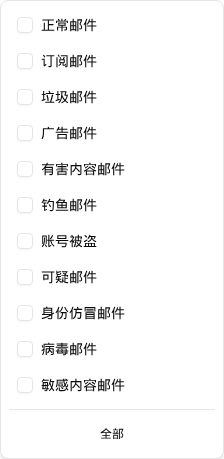

| 所属组件 | 2.2 搜索与筛选区 CompactSearchFilters |
| 主文件 | index.html#component-2-2 |
| 触发路径 | 层级0 → 高级筛选面板 → 点击「邮件类型」下拉按钮（PopoverTrigger，未选时显示「全部」） |
| demo 源码 | compact-search-filters.tsx L880–947 |

w-56），11 个复选行 + 分隔线 + 「全部」清空按钮。| # | value | 标签 | 风险分组 |
|---|---|---|---|
| 1 | normal | 正常邮件 | normal |
| 2 | subscription | 订阅邮件 | normal |
| 3 | spam | 垃圾邮件 | grey |
| 4 | ad | 广告邮件 | grey |
| 5 | harmful | 有害内容邮件 | malicious |
| 6 | phishing | 钓鱼邮件 | malicious |
| 7 | account_compromised | 账号被盗 | malicious |
| 8 | suspicious | 可疑邮件 | grey |
| 9 | spoofing | 身份仿冒邮件 | malicious |
| 10 | virus | 病毒邮件 | malicious |
| 11 | sensitive | 敏感内容邮件 | grey |
| 元素 | 行为 |
|---|---|
| 复选行 | 点击行任意处切换（Checkbox 本身 pointer-events-none，由父 div 的 onClick 驱动） |
| 触发按钮文案 | 未选 → 「全部」；已选 → 中文标签逗号拼接（truncate 截断） |
| 「全部」按钮 | 底部分隔线下，点击 setEmailType([]) 清空（不是"全选"） |
| 已选条件 chip | 生成「邮件类型: 钓鱼邮件, 病毒邮件」形式的 chip（仅在高级筛选收起时可见） |
| 过滤生效 | 是 —— filterValues.mailType 参与 filteredLogs（与「处置依据」「执行动作」不同） |
| 比对项 | demo 实际 DOM | 提取的 HTML | 是否一致 |
|---|---|---|---|
| 根节点 | div[data-slot=popover-content].w-56.p-2 | 同 | 一致 |
| 后代节点数 | 36 | 36 | 一致 |
| 复选行数 | 11 | 11 | 一致 |
| 底部「全部」按钮 | 1 个（ghost, w-full, text-xs） | 1 个 | 一致 |
| 勾选态 | data-state=checked + Check 图标 SVG | 同（预览引擎复刻） | 一致 |